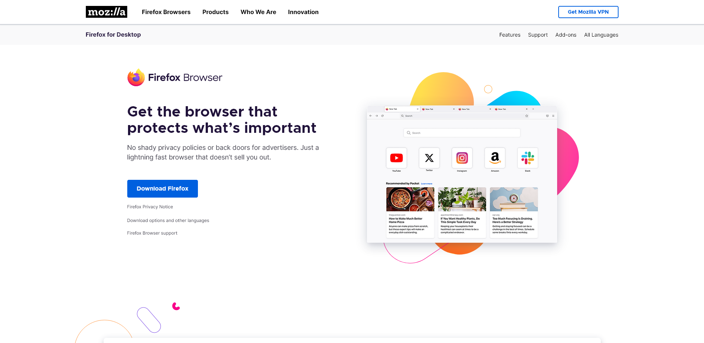
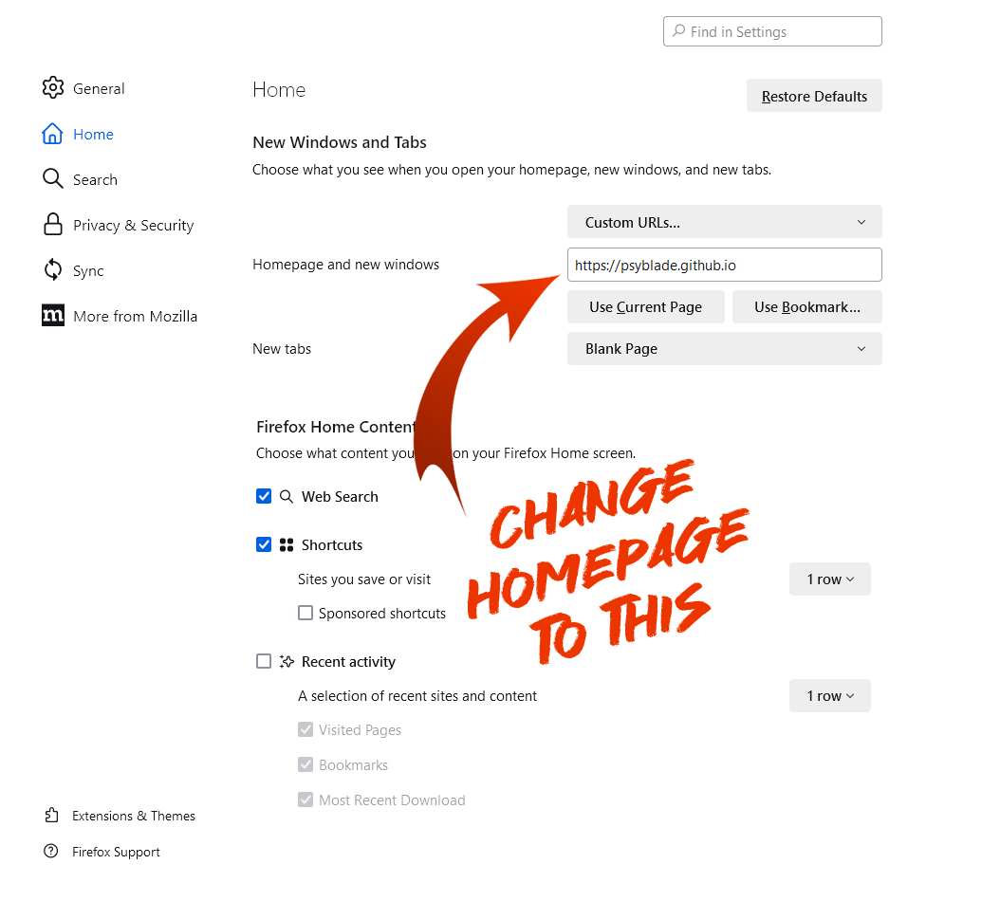
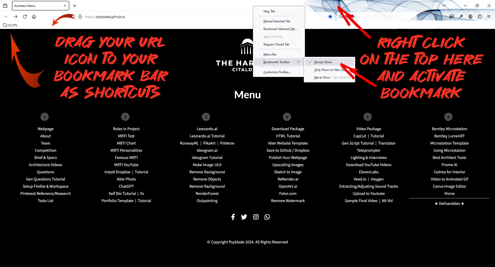
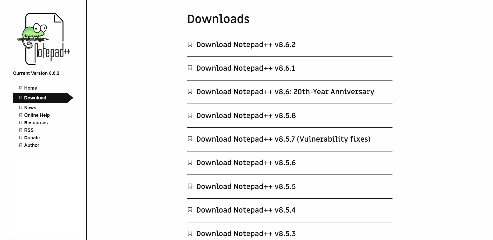
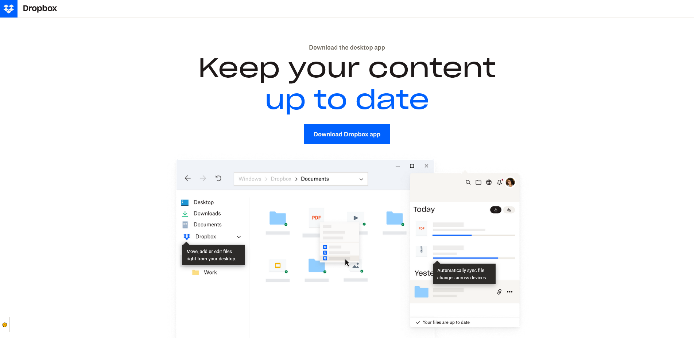

Firefox
Download and install Firefox.
Goto Firefox settings and select the "Home" tab in the menu options. Type in psyblade.github.io after you click on "Custom Page"
You can also drag any of your favorite pages into Firefox's bookmark toolbar as shortcuts.
Notepad++
Download and install the latest version of Notepad++.
After installing, you can drag an text files you want to edit into Notepadd++ for editing.
Dropbox
Download and install Dropbox.
After installing, sign in to Dropbox. If it is your first time, sign up, and select the "Free Basic Plan"
You can drag project files or video files into Dropbox so that you can access your file on any computer which has Dropbox installed.